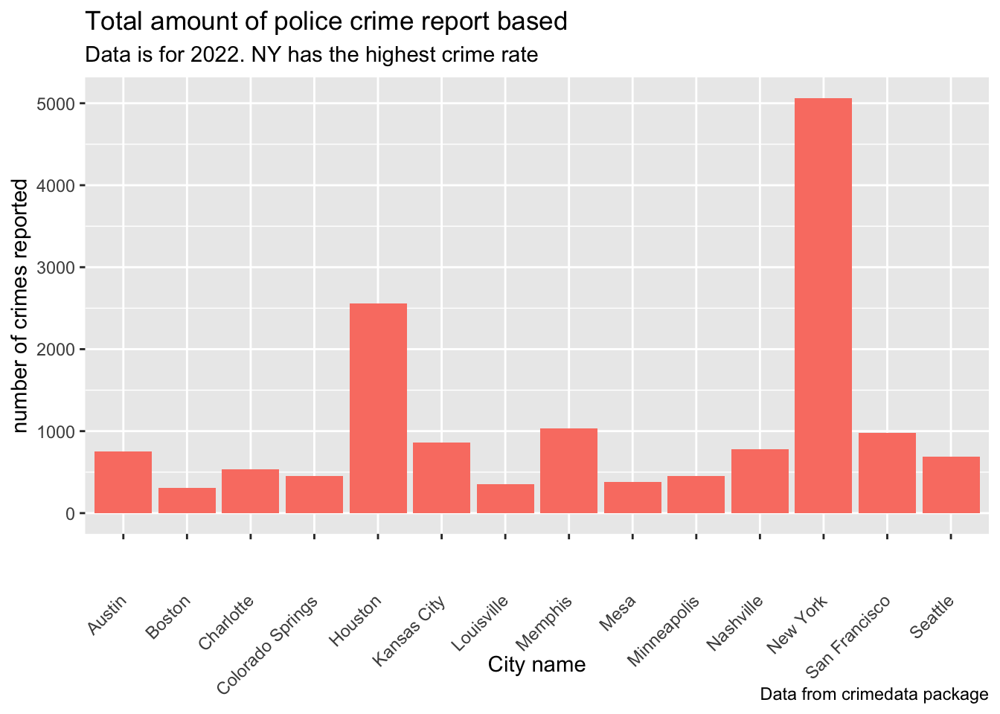
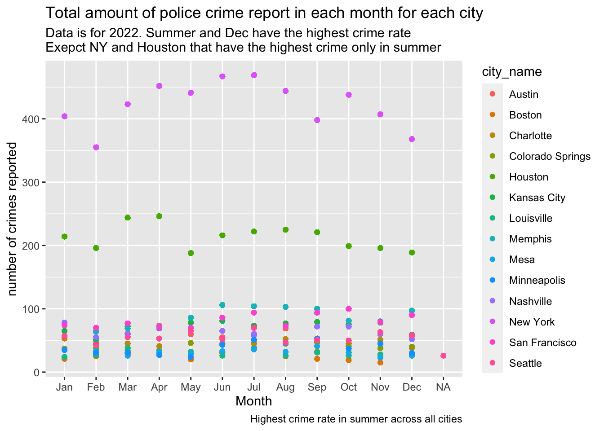
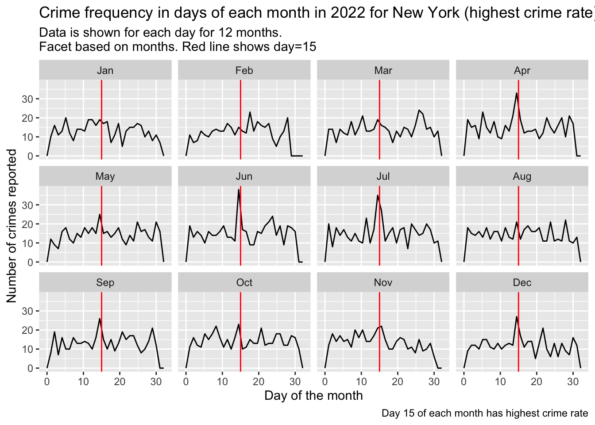

For this section, I will investigate the crime dataset for few different cities across the US (United States Map, n.d.).
I aim to answer the question: Which cities have highest crime rate? Is the crime rate higher depending on month/day/time?
This analysis can be useful for police department in these cities as well as tourists who are planning their holiday trips. With holidays around the corner, using this data analysis, the police department can assign more units to areas with higher crime rate to insure safety of visitors at the times where the crime rate tends to be higher.
I found this data from an R package which includes data from here: https://osf.io/zyaqn/ (Ashby 2023)
Note
I found this dataset via Google search for this assignment.
Attaching package: 'lubridate'
The following objects are masked from 'package:base':
date, intersect, setdiff, union
── Attaching core tidyverse packages ──────────────────────── tidyverse 2.0.0 ──
✔ dplyr 1.1.2 ✔ stringr 1.5.0
✔ forcats 1.0.0 ✔ tibble 3.2.1
✔ purrr 1.0.1 ✔ tidyr 1.3.0
✔ readr 2.1.4
── Conflicts ────────────────────────────────────────── tidyverse_conflicts() ──
✖ dplyr::filter() masks stats::filter()
✖ dplyr::lag() masks stats::lag()
ℹ Use the conflicted package (<http://conflicted.r-lib.org/>) to force all conflicts to become errors
Downloading list of URLs for data files.
ℹ This takes a few seconds but is only done once per session.
Downloading sample data for All Cities in 2022
Use bar plot to get an overall understanding of which city has the highest crime rate
#Look at the bar plot to understand which city had the most crime report:ggplot(crime_data,aes(city_name))+geom_bar(fill="salmon")+labs(title ="Total amount of police crime report based",subtitle ="Data is for 2022. NY has the highest crime rate",caption="Data from crimedata package",x="City name",y="number of crimes reported")+theme(axis.text.x =element_text(angle =45, vjust =0.5, hjust=1))

Crime rate based on month:
First count the total number of crimes reported for each city using tidyverse (Garrett Grolemund 2022). Then arrange them from highest crime rate to lowest
# A tibble: 14 × 2
city_name total_crime
<fct> <int>
1 New York 5066
2 Houston 2556
3 Memphis 1037
4 San Francisco 977
5 Kansas City 857
6 Nashville 783
7 Austin 751
8 Seattle 690
9 Charlotte 538
10 Colorado Springs 452
11 Minneapolis 452
12 Mesa 378
13 Louisville 349
14 Boston 304
#New York,Houston,Memphis,San Francisco are the top 4 cities with highest crime rate#data wrangling:crime_data_clean<-crime_data %>%select(c(city_name,offense_type,offense_group,offense_against,date_single)) %>%mutate(month=month(date_single,label=TRUE),day=day(date_single),hour=hour(date_single))#only look at top 4 citiescrime_data_clean_top<-crime_data_clean %>%group_by(city_name,month) %>%mutate(total=n())ggplot(crime_data_clean_top, aes(x=month, y=total,color=city_name))+geom_point()+labs(title ="Total amount of police crime report in each month for each city",subtitle ="Data is for 2022. Summer and Dec have the highest crime rate\nExepct NY and Houston that have the highest crime only in summer",caption="Highest crime rate in summer across all cities",x="Month",y="number of crimes reported")

NY has the highest crime rate across cities in the US. In addition, the crime rate is highest in the summer.
Crime rate based on day
Only looking at NY (highest crime rate), I would like to know if there is a pattern across days of the month.
crime_data_clean_top<- crime_data_clean %>%filter(city_name =="New York")ggplot(crime_data_clean_top, aes(day))+geom_freqpoly()+facet_wrap(vars(month))+geom_vline(xintercept =15, color="red")+labs(title ="Crime frequency in days of each month in 2022 for New York (highest crime rate) ",subtitle ="Data is shown for each day for 12 months. \nFacet based on months. Red line shows day=15",caption="Day 15 of each month has highest crime rate",x="Day of the month",y="Number of crimes reported")
`stat_bin()` using `bins = 30`. Pick better value with `binwidth`.

Expand To Learn About Collapse
This analysis was done only for 2022. The crime pattern might be different for other years.
Conclusion
I started this analysis by looking at the crime rate across multiple cities in the US. In 2022, NY had the highest crime rate followed by Houston, Memphis, San Francisco.
All cities had similar pattern of crime rate across various months. All the cities have higher crime rate during the summer (Jun and July). In addition, majority of the cities also have an increase in crime rate in December expect NY and Houston.
Looking at the city with the highest crime rate (NY), I was wondering if there is a specific pattern when looking at different days in a month. This analysis showed that for some reason, there is an increase in the crime rate around middle of the month (day=15). This pattern is seen in most months. To understand why this pattern is seen, we need more information on specific locations and areas where different crimes are seen.